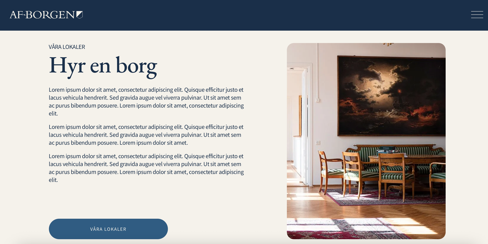
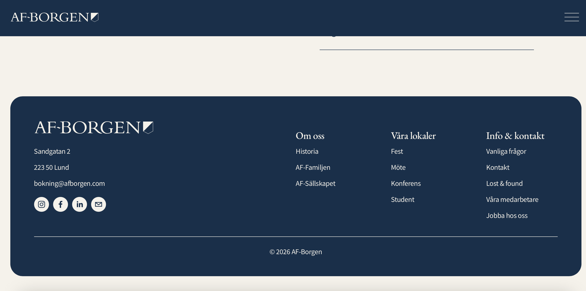

Webbdesign · AF-Borgen AB
Hemsida
Webbdesign och visuell kommunikation för AF-Borgens hemsida, med fokus på tydlighet, struktur och användarvänlighet.
Min roll
Webbdesign
Uppdragsgivare
AF-Borgen AB
År
2026
Om projektet
Jag arbetade med den visuella utformningen av AF-Borgens hemsida, med målet att skapa en tydlig och sammanhållen digital upplevelse. Arbetet omfattade bland annat strukturering av innehåll, typografi, layout och visuella komponenter.
Jag ansvarade för webbdesign och grafisk form samt implementering av designen i hemsidan. Fokus låg på att göra informationen lätt att hitta och skapa en konsekvent visuell identitet genom hela webbplatsen.



